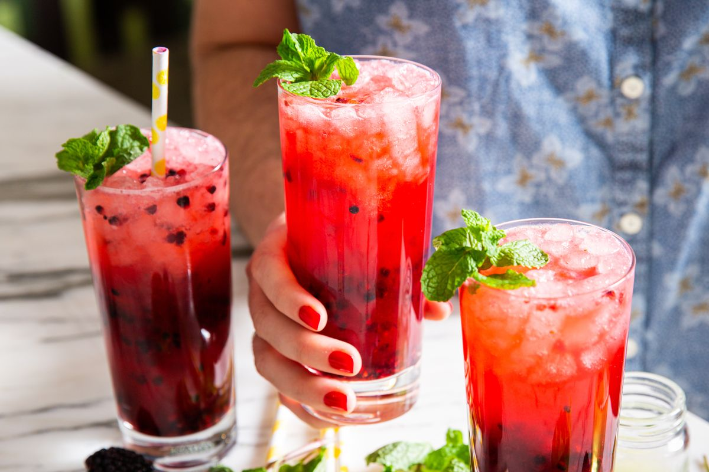
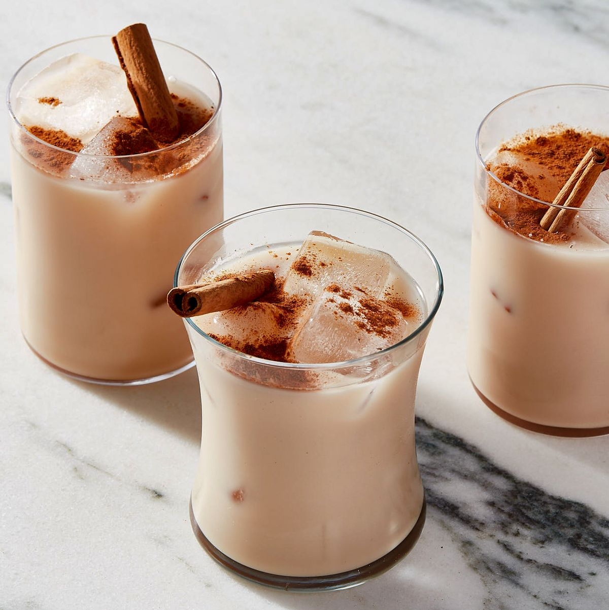
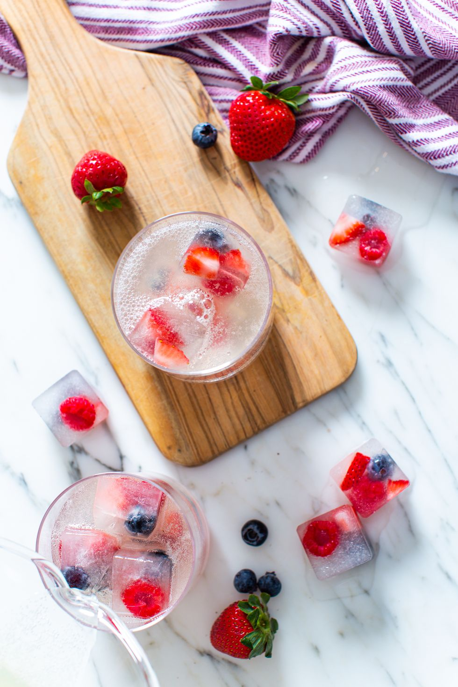
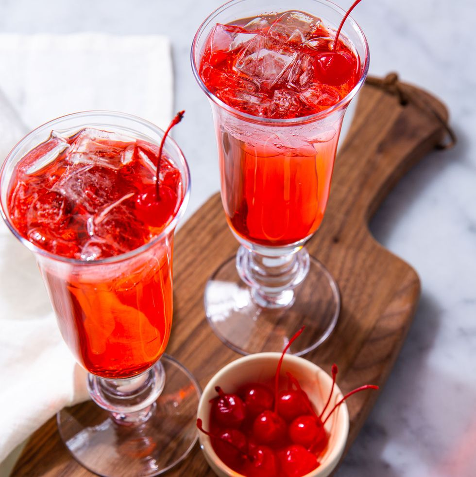
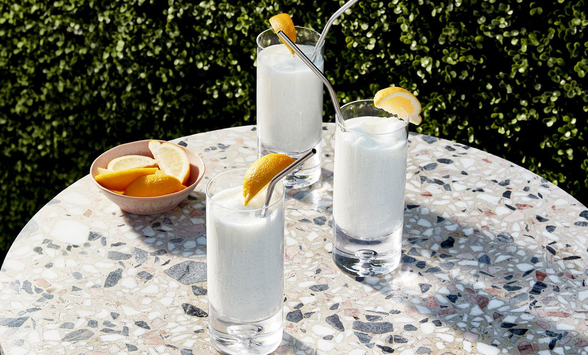

SUMMER THRILLING MOCKTAILS 🍹
BLACKBERRY VIRGIN MOJITO

Ingredients
- 1/2 c. packed fresh mint leaves
- 1 c. granulated sugar
- 1 c. water
- 1 c. blackberries
- 1 tsp. granulated sugar
- 1/2 c. lime juice
- Ice
- 2 (12-oz.) cans seltzer
- Fresh mint, for garnish
Steps
- In a small pot using a wooden spoon or using a mortar and pestle, crush mint leaves.
- Add sugar and water and bring to a boil over medium heat, stirring to dissolve sugar. Let boil 3 minutes.
- Let cool to room temperature, then strain out mint leaves, pressing with a wooden spoon to help release all liquid.
- In a small bowl, add blackberries and sugar, and using a wooden spoon, crush blackberries until broken down.
- Divide blackberries between 4 glasses and add 2 tablespoons simple syrup and 2 tablespoons lime juice to each glass.
- Fill glasses with ice and top off with seltzer, then garnish with mint.
- Enjoy!
MEXICAN HORCHATA

Ingredients
- 1 c. long-grain white rice
- 1/2 c. slivered almonds (optional)
- 2 (3") cinnamon sticks, plus more for serving
- 1 (12-oz.) can evaporated milk or 1 1/2 c. almond milk
- 2 c. whole milk or almond milk
- 1 tsp. ground cinnamon, plus more for serving
- 1 tsp. pure vanilla extract
- 1/4 tsp. kosher salt
- Condensed milk
Steps
- In a fine-mesh strainer, run cold water over rice until water runs mostly clear, about 15 seconds.Transfer rice to a blender.
- Add almonds (if using), cinnamon sticks, and 3 cups filtered water and blend until rice is broken down but not totally pulverized, about 30 seconds.
- Transfer to a container with a lid and refrigerate overnight.
- n a large bowl, lay cheesecloth in a single layer.
- Pour rice milk through fine-mesh strainer into cheesecloth, pressing on pulp with a rubber spatula to release as much liquid as possible.
- Discard rice and pulp. Gather corners of cloth and work milk through the fibers, massaging to move around ground rice.
- Add evaporated milk, whole milk, ground cinnamon, vanilla, salt, and 4 cups filtered water and whisk until combined.
- Taste and add condensed milk 1 teaspoon at a time, whisking after each addition, until sweetened to your liking.
- Spoon or pour horchata into ice-filled glasses. Garnish with cinnamon sticks and ground cinnamon.
- Enjoy!
TRIPLE BERRY SPARKLERS

Ingredients
- 1 1/4 c. coconut water
- 1/3 c. blueberries
- 1/3 c. raspberries
- 1/3 c. chopped strawberries
- 2 tbsp. honey
- 2 tbsp. freshly squeezed lime juice
- 2 tbsp. freshly squeezed lemon juice
- 3 (12-oz.) cans seltzer
Steps
- Place blueberries, raspberries, and strawberries in ice tray, then fill with coconut water.
- Freeze until frozen solid, about 4 hours.
- In a pitcher or large measuring cup, combine honey with lime and lemon juices.
- Stir until honey is completely dissolved. Add seltzer and stir gently to combine.
- Fill serving glasses with ice, then fill with lemon lime mixture.
- Enjoy!
SHIRLEY TEMPLE

Ingredients
- 3 c. lemon-lime soda
- Juice of 1 lime
- 4 tsp. grenadine
- Maraschino cherries, for serving
- Ice
Steps
- Fill 4 glasses with ice.
- Divide soda and lime juice between glasses.
- Top off with grenadine.
- Serve with a maraschino cherry.
- Enjoy!
WHIPPED LEMONADE

Ingredients
- 1 c. lemonade
- 1/2 c. sweetened condensed milk
- Juice of 1 lemon
- 4 c. ice
- Lemon slices, for garnish
Steps
- Take a blender. Combine ingredients.
- And blend until smooth and creamy.
- Add more ice to thicken as desired.
- Pour into glasses.
- And garnish with a lemon slice before serving.
- Enjoy!
ARNOLD PALMER
Ingredients
- 3 c. water, divided
- 3/4 c. granulated sugar
- Juice of 6 large lemons (about 3/4 cup)
- 4 c. water
- 1/3 c. honey
- 5 black tea bags
- Ice
- Fresh mint
- Lemon wedges
Steps
- Make lemonade: In a small pot over medium heat, bring 1 cup water and sugar to a boil, stirring to dissolve sugar.
- Let boil 2 minutes. Let cool to room temperature.
- Combine simple syrup, remaining 2 cups water, and lemon juice.
- Make tea: In a medium pot over medium-high heat, bring water to a boil. Add honey and stir to dissolve.
- Turn off heat and add tea bags. Let steep 5 minutes. Let cool to room temperature.
- In a large pitcher, combine lemonade and tea. Pour into glasses over ice and garnish with mint and lemon wedges.
- Enjoy!